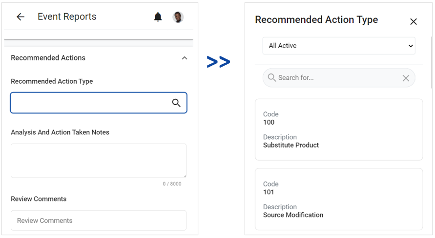

If a field has a related picklist, there will be a Magnifying Glass icon to the right. When you click the icon, a list of look-up table entries will display. The picklist will have a default list view. If you click the drop-down side menu, a list of all available list views will display. You can also use the search bar to search for a record.
Once you select an option, the picklist will close, and the selected option will display in the field.
